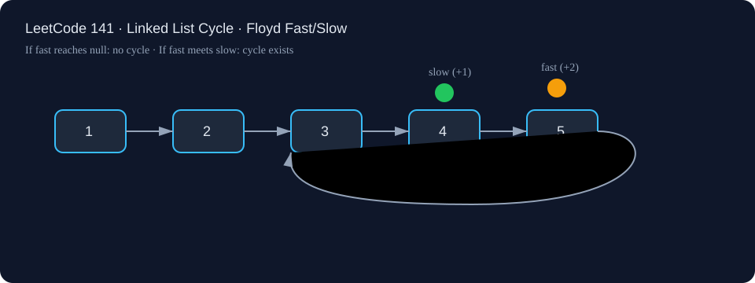

LeetCode 141: Linked List Cycle (Floyd Fast & Slow Pointers)
LeetCode 141Linked ListTwo PointersFloydToday we solve LeetCode 141 - Linked List Cycle.
Source: https://leetcode.com/problems/linked-list-cycle/

English
Problem Summary
Given the head of a singly linked list, determine whether the list contains a cycle. A cycle exists if some node can be revisited by continuously following next pointers.
Key Insight
If you move one pointer by 1 step (slow) and another by 2 steps (fast), then:
- In an acyclic list, fast eventually reaches null.
- In a cyclic list, fast laps and meets slow inside the loop.
This is Floyd's Tortoise and Hare algorithm and needs constant extra space.
Brute Force and Why Insufficient
A straightforward approach is storing visited node references in a hash set. If a node appears again, there is a cycle. This works in O(n) time but costs O(n) extra memory. Interviewers often ask for the follow-up: solve it in O(1) extra space.
Optimal Algorithm (Step-by-Step)
1) Handle trivial case: if head == null or head.next == null, return false.
2) Set slow = head, fast = head.
3) While fast != null and fast.next != null:
a) slow = slow.next
b) fast = fast.next.next
c) If slow == fast, return true.
4) Loop ended because fast hit null ⇒ return false.
Complexity Analysis
Time: O(n). Each pointer moves through at most linear nodes before terminating or meeting.
Space: O(1). Only two pointers are used.
Common Pitfalls
- Forgetting null checks before fast.next.next, causing runtime errors.
- Comparing node values instead of node references (different nodes may have same value).
- Initializing pointers inconsistently and missing edge cases like single-node self-cycle.
Reference Implementations (Java / Go / C++ / Python / JavaScript)
public class Solution {
public boolean hasCycle(ListNode head) {
if (head == null || head.next == null) return false;
ListNode slow = head;
ListNode fast = head;
while (fast != null && fast.next != null) {
slow = slow.next;
fast = fast.next.next;
if (slow == fast) return true;
}
return false;
}
}func hasCycle(head *ListNode) bool {
if head == nil || head.Next == nil {
return false
}
slow, fast := head, head
for fast != nil && fast.Next != nil {
slow = slow.Next
fast = fast.Next.Next
if slow == fast {
return true
}
}
return false
}class Solution {
public:
bool hasCycle(ListNode *head) {
if (!head || !head->next) return false;
ListNode* slow = head;
ListNode* fast = head;
while (fast && fast->next) {
slow = slow->next;
fast = fast->next->next;
if (slow == fast) return true;
}
return false;
}
};class Solution:
def hasCycle(self, head: Optional[ListNode]) -> bool:
if not head or not head.next:
return False
slow = head
fast = head
while fast and fast.next:
slow = slow.next
fast = fast.next.next
if slow is fast:
return True
return Falsevar hasCycle = function(head) {
if (!head || !head.next) return false;
let slow = head;
let fast = head;
while (fast && fast.next) {
slow = slow.next;
fast = fast.next.next;
if (slow === fast) return true;
}
return false;
};中文
题目概述
给定单链表头节点 head，判断链表中是否存在环。若沿着 next 指针不断走会回到已访问过的节点，就说明有环。
核心思路
使用快慢指针：
- 慢指针每次走 1 步；
- 快指针每次走 2 步。
如果无环，快指针会先到达空指针；如果有环，快指针会在环内追上慢指针。这个方法就是 Floyd 判圈，额外空间是 O(1)。
暴力解法与不足
暴力思路是用哈希集合记录访问过的节点引用；再次遇到同一个节点就返回 true。时间复杂度是 O(n)，但空间复杂度也是 O(n)，不满足进阶要求。
最优算法（步骤）
1）若 head == null 或 head.next == null，直接返回 false。
2）初始化 slow = head、fast = head。
3）循环条件：fast != null && fast.next != null：
a）slow = slow.next
b）fast = fast.next.next
c）若 slow == fast，返回 true。
4）循环结束说明快指针走到链表末尾，返回 false。
复杂度分析
时间复杂度：O(n)。
空间复杂度：O(1)。
常见陷阱
- 没做好空指针判断就访问 fast.next.next。
- 用节点值比较而不是节点引用比较。
- 忽略边界：空链表、单节点无环、单节点自环。
多语言参考实现（Java / Go / C++ / Python / JavaScript）
public class Solution {
public boolean hasCycle(ListNode head) {
if (head == null || head.next == null) return false;
ListNode slow = head;
ListNode fast = head;
while (fast != null && fast.next != null) {
slow = slow.next;
fast = fast.next.next;
if (slow == fast) return true;
}
return false;
}
}func hasCycle(head *ListNode) bool {
if head == nil || head.Next == nil {
return false
}
slow, fast := head, head
for fast != nil && fast.Next != nil {
slow = slow.Next
fast = fast.Next.Next
if slow == fast {
return true
}
}
return false
}class Solution {
public:
bool hasCycle(ListNode *head) {
if (!head || !head->next) return false;
ListNode* slow = head;
ListNode* fast = head;
while (fast && fast->next) {
slow = slow->next;
fast = fast->next->next;
if (slow == fast) return true;
}
return false;
}
};class Solution:
def hasCycle(self, head: Optional[ListNode]) -> bool:
if not head or not head.next:
return False
slow = head
fast = head
while fast and fast.next:
slow = slow.next
fast = fast.next.next
if slow is fast:
return True
return Falsevar hasCycle = function(head) {
if (!head || !head.next) return false;
let slow = head;
let fast = head;
while (fast && fast.next) {
slow = slow.next;
fast = fast.next.next;
if (slow === fast) return true;
}
return false;
};
Comments